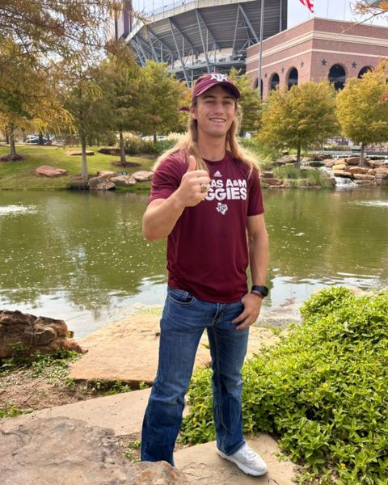
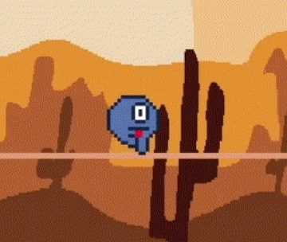
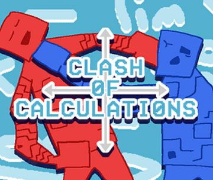
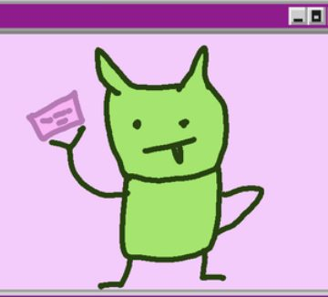
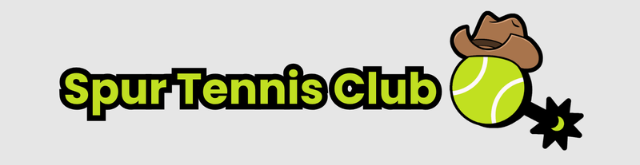

About

Howdy! I'm a senior at Texas A&M studying Geographic Information Science and Technology with a minor in Computer Science, graduating December 2026. I work as a GIS Student Technician, run a tennis tournament business, and build games in my spare time.
Click a channel above to open a project.
Experience and Education
GIS Student Technician
- Help students, faculty, and staff with ArcGIS Pro, ArcGIS Online, QGIS, ENVI, and Trimble.
- Support ArcGIS Online portal administration, shared datasets, web maps, StoryMaps, and field data collection tools.
- Develop and configure web maps for Aggiemap, including layer visibility, popups, and data integration for campus operations and special events.
Owner and Event Organizer
- Run monthly UTR-verified tennis tournaments with 50+ players of all ages and levels.
- Handle scheduling, finances, customer support, merchandise, the website, and social media.
Bookkeeper and Event Staff
- Build and automate Excel and live Google Sheets tools used by event staff and participants.
- Fix live data problems on the spot, while clients and attendees are watching.
B.S. Geographic Information Science and Technology
Coursework includes Cartography and Visualization, GNSS in the Geosciences, Remote Sensing, Principles of GIS, Geodatabases, Digital Image Processing, Data Structures and Algorithms, and Computer Organization.
Certifications
- Automate the Boring Stuff with Python (Udemy)
- Classifying Objects Using Deep Learning in ArcGIS Pro
- Displaying Raster Data in ArcGIS
Tools
Game Development


Clash of Calculations
A two-player, web-based educational fighting game. Players solve math problems to power up their attacks. I built the mechanics, UI, and balancing, and drew the art myself. itch.io

Goblin Stole My Credit Card
[ADD]
Spur Tennis Club

I played UTR (Universal Tennis Rating) tournaments all through high school. When I came home one summer, most of those events were gone. So I started my own.
Spur Tennis Club is now a UTR provider in my hometown of Gatesville, Texas. With help from my parents, Sam and Se'Vette Early, we run monthly tournaments open to all ages and levels. Our first event, the Labor Day Weekend Roundup, brought in 47 players.
Contact
Email: sloneearly@gmail.com